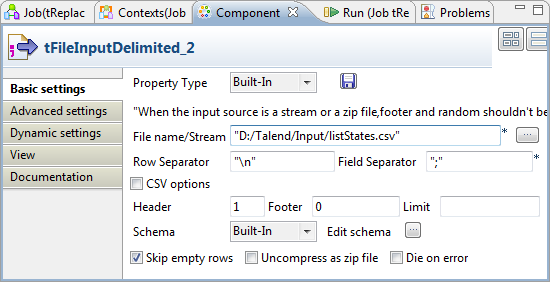
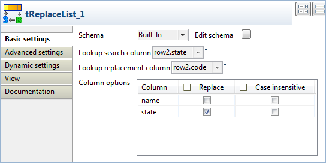
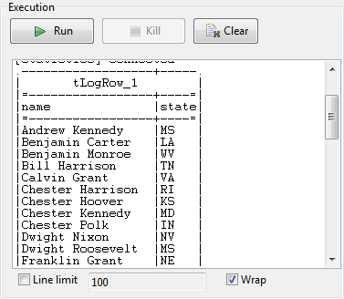

Famille de composant | Data Quality | |
Fonction | Le tReplaceList effectue un rechercher/remplacer dans les colonnes d’entrée spécifiées en fonction des données de référence (lookup). | |
Objectif | Ce composant permet de nettoyer tous les fichiers avant un traitement futur. | |
Basic settings | Schema et Edit schema | Un schéma est une description de lignes, i.e., il définit le nombre de champs qui sont traités et passés au composant suivant. Le schéma est soit local (built-in) soit distant dans le Repository. Si vous utilisez Talend Open Studio for Big Data, seul le mode Built-in est disponible. Deux colonnes en lecture seule, Value et Match sont automatiquement ajoutés au schéma de sortie. AvertissementLe type de données défini dans les schémas doit être cohérent, c’est-à-dire qu’un entier ne peut être remplacé que par un entier en utilisant un entier comme champ de référence. Une valeur d’un type ne peut être remplacée par une valeur d’un autre type. |
|
| Built-in : Le schéma est créé et conservé ponctuellement pour ce composant seulement. Voir également le Guide utilisateur de Talend Open Studio. |
|
| Repository : Le schéma existe déjà et est stocké dans le Repository. Ainsi, il peut être réutilisé. Voir également le Guide utilisateur de Talend Open Studio. |
| Lookup search column | Saisissez le numéro de la colonne sur laquelle effectuer la recherche dans le schéma de lookup. 0 : la première colonne lue 1 : la deuxième colonne lue n : numéro de la colonne dans le schéma lu. |
| AvertissementAfin de s’assurer que les valeurs cherchées sont uniques, assurez-vous que la colonne soit définie comme clé dans votre schéma de lookup. | |
| Lookup replacement column | Saisissez le numéro de la colonne dans laquelle les valeurs de remplacement sont stockées. 0 : la première colonne lue 1 : la deuxième colonne lue n : numéro de la colonne dans le schéma lu |
| Column options | Sélectionnez les colonnes du flux principal dans lequel le remplacement est effectué. |
Advanced settings | tStatCatcher Statistics | Cochez cette case pour collecter les métadonnées de process du Job, aussi bien au niveau du Job qu’au niveau de chaque composant. |
Utilisation | Ce composant est un composant intermédiaire, il nécessite un composant d’entrée et un composant de sortie. | |
Note
Si vous utilisez Talend Open Studio for Big Data, seul le mode Built-In est disponible pour les propriétés et le schéma.
Le Job suivant effectue un rechercher/remplacer sur une liste d’Etats avec leur code correspondant. Les codes correspondant sont extraits d’un fichier de référence placé en flux Lookup dans le Job. Le flux principal est dupliqué et les deux sorties sont affichées dans la console, pour constater l’état du flux principal avant et après remplacement.
Cliquez et déposez les composants suivants de la Palette : tMysqlInput, tFileInputDelimited, tReplicate, tReplaceList et deux tLogRow. Notez que si vos schémas d’entrée sont déjà centralisés dans le Repository, vous pouvez, d’un simple cliquer-déposer, les faire passer du nœud correspondant du répertoire Metadata du Repository vers l’espace de modélisation. Cela permettra de récupérer automatiquement les propriétés des composants d’entrée. Pour plus d’informations, consultez le Guide utilisateur de Talend Open Studio.
Connectez les composants à l’aide de liens Main Row via un clic-droit sur chaque composant. Notez que le lien de type main row provenant du flux de référence (tFileInputDelimited) se nomme lookup row.
Sélectionnez le composant tMysqlInput et définissez les paramètres du flux d’entrée.

Le schéma d’entrée est composé de deux colonnes : Names, States. La colonne States regroupe le nom des Etats des Etats-Unis qui seront remplacés par leur code respectif.
Dans le champ Query, assurez-vous que la colonne State est incluse dans la déclaration
Select. Dans cet exemple, toutes les colonnes sont sélectionnées.Vérifiez les paramètres du composant tReplicate. Le schéma est simplement divisé en deux flux identiques, mais aucun changement n’a été effectué sur le schéma.
Puis double-cliquez sur le composant tFileInputDelimited, pour paramétrer le fichier de référence.
Le fichier comporte deux colonnes : Postal et State. Postal correspond au code postal de l’Etat de la colonne State correspondante.
Les champs sont délimités par des point-virgules et les lignes par des retours chariot.
Modifiez le schéma du flux lookup.

Assurez-vous que la colonne lookup sur laquelle est effectuée la recherche (dans cet exemple : State) est définie comme clé, pour s’assurer que les données cherchées sont uniques.
Sélectionnez le composant tReplaceList et paramétrez l’opération à effectuer.
Le schéma est récupéré à partir du composant précédent dans le flux principal.
Dans le champ Lookup search index, renseignez la position de la colonne sur laquelle est effectuée la recherche. Dans cet exemple, State est la deuxième colonne du fichier d’entrée lookup. Ainsi, saisissez 1 dans ce champ.
Dans le champ Lookup replacement index, renseignez le numéro de la colonne contenant les valeurs de remplacement, dans cet exemple : Postal pour le code postal de l’Etat.
Dans le tableau Column options, sélectionnez la colonne States puisque dans cet exemple le nom des Etats doit être remplacé par leur code correspondant.
Pour les deux composants tLogRow, cochez la case Print values in table cells pour que les sorties soient plus claires.
Sauvegardez le Job et exécutez-le en appuyant sur F6.

Le premier flux de sortie affiche la colonne States avec les noms des Etats puisqu’il provient du flux d’entrée principal.
Le deuxième flux affiche la colonne States après que le nom des Etats aient été remplacés par leur codes postaux respectifs.